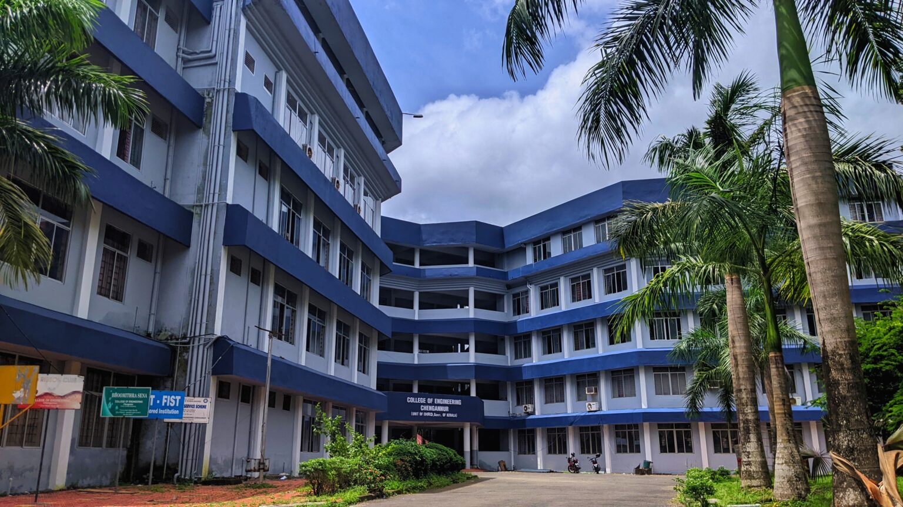

College Of Engineering Chengannur
Vision
Mission
About Us

Programmes Offered
| Programmes |
Duration |
| B.Tech in Computer Science & Engineering |
4 years |
| M.Tech in Computer Science & Engineering |
2 years |
| Master of Computer Applications (M.C.A) |
2 years |
Contact Us
College of Engineering Chengannur
Chengannur P.O.
Alapuzha District
Kerala
PIN 689121
+91-479- 2455125 (Reception)
+91-479-2454125 (Office)
+91-479-2451424 (Administrative officer)
+91-479-2456046 (Principal)
principal@ceconline.edu